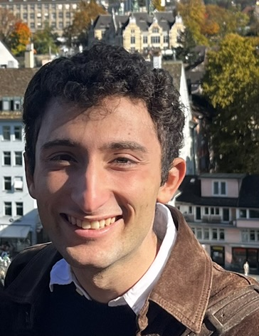

Welcome!
I am a mathematics PhD candidate under the supervision of Antonella Perucca at the the University of Luxembourg. I mainly work on moduli questions related to abelian varieties and level structures, and in particular on the associated modular polynomials and their height. I also have a strong focus on isogeny-based cryptography and the applications of modular polynomials in this area. In addition, my group in Luxembourg and I work on a project on torsion-Kummer representations for elliptic curves.
Don't hesitate to hit me up if you're interested in similar topics related to arithmetic geometry or post-quantum cryptography, or have an idea for a project!